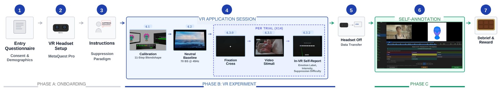
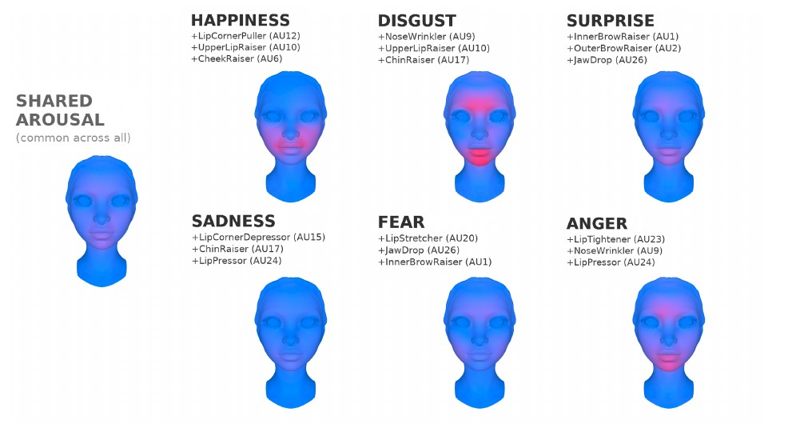

BlendME
A VR Blendshape Microexpression Dataset with Retrospective Self-Annotation
Swethasree Sribabu, Vishnu Raj, Gouthaman KV, Manivannan Muniyandi
CVPR 2026 Workshop on Subtle Visual Computing · Best Paper Honorable Mention
paper / published project / dataset
Capture and retrospective annotation

I built VR-native capture with the Meta Quest Pro, Temporal Residual Microactivation (TRM) candidate detection, and avatar-replay self-annotation. We captured 30 participants; quality filtering produced 112 microexpression clips from 21 people.

Action-unit comparisons with CASME II, SAMM and SMIC found significant correspondence for disgust. Facial movement and retrospective self-report are distinct measurements; the labels do not directly measure what someone feels.